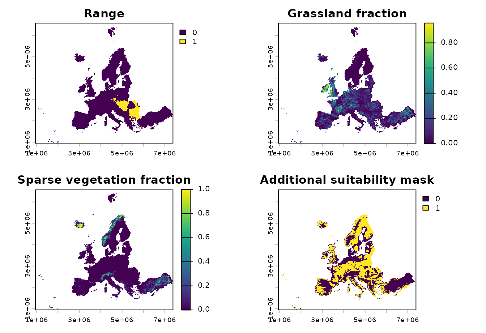
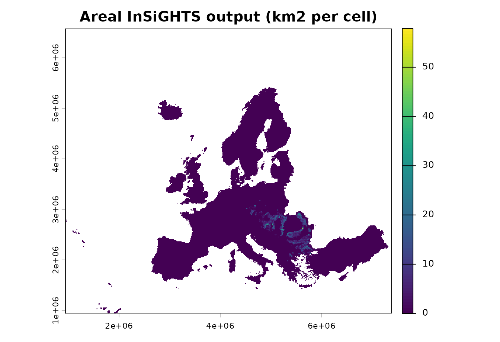
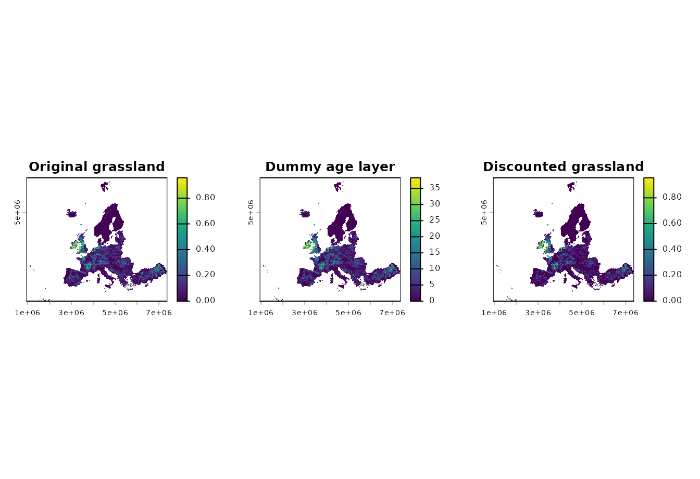
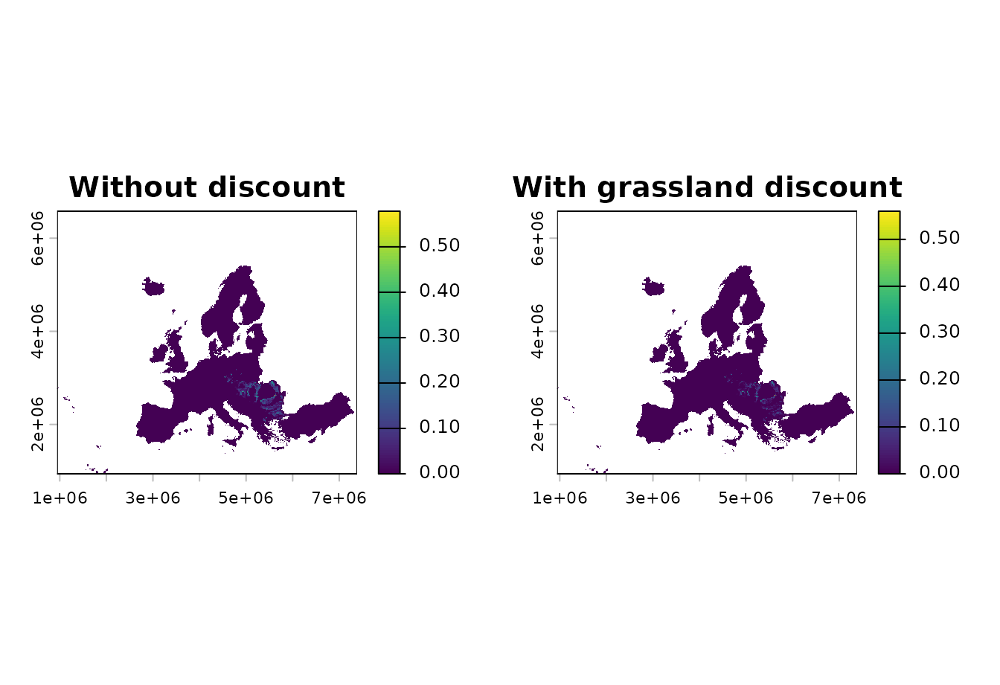
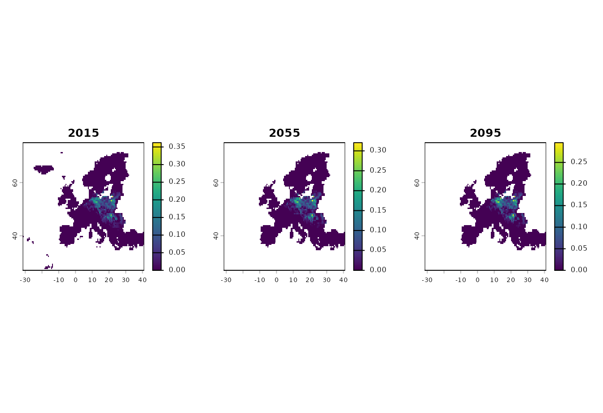

This article gives a first tour of the main insights_*()
functions. The examples use the small rasters shipped with the package
so they can be rendered by pkgdown without external downloads.
| Function | Use it when | Main output |
|---|---|---|
insights_fraction() |
Land-use, habitat, or condition layers are fractions or suitability
weights in [0, 1]. |
A refined suitability or area-of-habitat raster. |
insights_area() |
Land-use or habitat layers are already expressed as area per cell. | A refined raster already in area units. |
insights_discount() |
A habitat class should be discounted by an age or maturity layer. | A maturity-weighted version of the land-use layer. |
insights_summary() |
Refined rasters need to be converted to totals or relative indicators. | A data frame of absolute area, relative change, or symmetric relative change. |
Example inputs
The current range example is a binary range layer. The land-use
layers are stored as integer fractions from 0 to 10000, so we divide
them by 10000 before passing them to insights_fraction().
The DEM example is already scaled to [0, 1] and is used
here as a simple additional suitability mask.
range <- terra::rast(system.file(
"extdata/example_range.tif",
package = "ibis.insights",
mustWork = TRUE
))
grassland <- terra::rast(system.file(
"extdata/Grassland.tif",
package = "ibis.insights",
mustWork = TRUE
)) / 10000
sparse_vegetation <- terra::rast(system.file(
"extdata/Sparsely.vegetated.areas.tif",
package = "ibis.insights",
mustWork = TRUE
)) / 10000
lu_fraction <- c(grassland, sparse_vegetation)
names(lu_fraction) <- c("grassland", "sparse_vegetation")
extra_suitability <- terra::rast(system.file(
"extdata/DEM.tif",
package = "ibis.insights",
mustWork = TRUE
))
names(extra_suitability) <- "extra_suitability"
op <- par(mfrow = c(2, 2), mar = c(2, 2, 3, 4))
plot(range, main = "Range")
plot(lu_fraction[[1]], main = "Grassland fraction")
plot(lu_fraction[[2]], main = "Sparse vegetation fraction")
plot(extra_suitability, main = "Additional suitability mask")
par(op)Fractional land-use: insights_fraction()
Use insights_fraction() when the habitat or land-use
input is a fraction, probability, or suitability weight. Multiple
land-use layers are summed before they are applied to the range.
clamp = TRUE caps the combined suitability at one when
several suitable land-use classes overlap.
aoh_fraction <- insights_fraction(
range = range,
lu = lu_fraction,
other = extra_suitability,
clamp = TRUE
)
plot(aoh_fraction, main = "Fractional InSiGHTS output")insights_summary() converts this fractional raster to
area by multiplying by cell area, because toArea = TRUE by
default.
insights_summary(aoh_fraction, relative = FALSE)
#> time suitability unit
#> 1 NA 23590.72 km2Areal land-use: insights_area()
Use insights_area() when the land-use values are already
in area units. In this example we convert the fractional land-use layers
to square kilometres per cell with terra::cellSize().
Because the output is already in area units, summarize with
toArea = FALSE.
cell_area_km2 <- terra::cellSize(lu_fraction[[1]], unit = "km")
lu_area_km2 <- lu_fraction * cell_area_km2
aoh_area <- insights_area(
range = range,
lu = lu_area_km2,
other = extra_suitability
)
plot(aoh_area, main = "Areal InSiGHTS output (km2 per cell)")
insights_summary(aoh_area, toArea = FALSE, relative = FALSE)
#> time suitability unit
#> 1 NA 23590.72 inputMaturity weighting: insights_discount()
Use insights_discount() before
insights_fraction() or insights_area() when a
habitat class should not count at full value immediately after it
appears. The example below creates a simple dummy age layer for
grassland. Real analyses should use an age or maturity layer for the
same habitat class.
grassland_age <- lu_fraction[["grassland"]] * 40
names(grassland_age) <- "grassland_age_years"
invisible(utils::capture.output({
grassland_discounted <- insights_discount(
lu = lu_fraction[["grassland"]],
age = grassland_age,
target_age = 20,
target = 0.95
)
}))
names(grassland_discounted) <- "grassland_discounted"
lu_discounted <- c(grassland_discounted, lu_fraction[["sparse_vegetation"]])
names(lu_discounted) <- c("grassland_discounted", "sparse_vegetation")
aoh_discounted <- insights_fraction(
range = range,
lu = lu_discounted,
other = extra_suitability,
clamp = TRUE
)
op <- par(mfrow = c(1, 3), mar = c(2, 2, 3, 4))
plot(lu_fraction[["grassland"]], main = "Original grassland")
plot(grassland_age, main = "Dummy age layer")
plot(grassland_discounted, main = "Discounted grassland")
par(op)
op <- par(mfrow = c(1, 2), mar = c(2, 2, 3, 4))
plot(aoh_fraction, main = "Without discount")
plot(aoh_discounted, main = "With grassland discount")
par(op)
insights_summary(aoh_discounted, relative = FALSE)
#> time suitability unit
#> 1 NA 11646.5 km2Indicators: insights_summary()
With a single-layer raster, insights_summary() reports
an absolute total. With multiple layers or time steps, it can also
report change relative to the first time step. The standard relative
change is returned as a percentage; the symmetric relative change is
bounded in [-1, 1].
aoh_series <- c(aoh_fraction, aoh_discounted, aoh_discounted * 0.8)
names(aoh_series) <- c("baseline", "maturity_discount", "future_example")
terra::time(aoh_series, tstep = "years") <- c(2020, 2040, 2060)
index_summary <- insights_summary(
aoh_series,
relative = TRUE,
symmetric = TRUE
)
index_summary
#> time suitability unit relative_change_perc relative_change_sym
#> 1 2020 0.00 km2 0.00000 0.0000000
#> 2 2040 -11944.22 km2 -50.63101 -0.3389660
#> 3 2060 -14273.52 km2 -60.50481 -0.4337412Temporal scenario example
The package also ships a small temporal scenario for Bombina
bombina. This is a stars object with a time dimension
and an ensemble_threshold attribute. It is useful for
demonstrating how the insights_*() functions handle
temporal range inputs.
bombina_range <- stars::read_mdim(system.file(
"extdata/Bombina_bombina__ssp126.nc",
package = "ibis.insights",
mustWork = TRUE
))
bombina_range <- split(bombina_range)
bombina_range <- bombina_range["ensemble_threshold"]
invisible(utils::capture.output({
bombina_aoh <- suppressMessages(insights_fraction(
range = bombina_range,
lu = lu_fraction,
clamp = TRUE
))
}))
bombina_summary <- insights_summary(
bombina_aoh,
relative = TRUE,
symmetric = TRUE
)
bombina_summary
#> time band suitability unit relative_change_perc
#> 1 2015-01-01 2015-01-01 0.000 km2 0.000000
#> 2 2025-01-01 2025-01-01 -1760.229 km2 -2.073683
#> 3 2035-01-01 2035-01-01 -9637.467 km2 -11.353665
#> 4 2045-01-01 2045-01-01 -7887.350 km2 -9.291895
#> 5 2055-01-01 2055-01-01 -9587.168 km2 -11.294409
#> 6 2065-01-01 2065-01-01 -13247.307 km2 -15.606329
#> 7 2075-01-01 2075-01-01 -12746.687 km2 -15.016560
#> 8 2085-01-01 2085-01-01 -15312.780 km2 -18.039612
#> 9 2095-01-01 2095-01-01 -16806.513 km2 -19.799342
#> relative_change_sym
#> 1 0.00000000
#> 2 -0.01047704
#> 3 -0.06018492
#> 4 -0.04872312
#> 5 -0.05985201
#> 6 -0.08463593
#> 7 -0.08117786
#> 8 -0.09914033
#> 9 -0.10987386
bombina_aoh_raster <- terra::rast(bombina_aoh)
terra::time(bombina_aoh_raster) <- stars::st_get_dimension_values(
bombina_aoh,
"time"
)
op <- par(mfrow = c(1, 3), mar = c(2, 2, 3, 4))
plot(bombina_aoh_raster[[1]], main = "2015")
plot(bombina_aoh_raster[[5]], main = "2055")
plot(bombina_aoh_raster[[9]], main = "2095")
par(op)